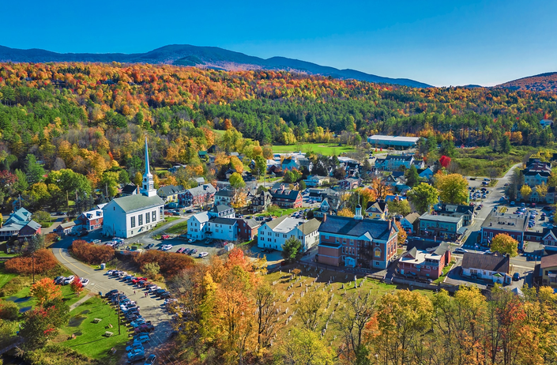

A lot of phrases have been going around in pop culture, I'm referring specifically to the loneliness epidemic.
I've primarily heard of the male loneliness epidemic, but in some instances also the female loneliness epidemic. And from where I am standing over in my realm, I see a lot of people blame the other gender, money, feminism, prejudice, pure evil, or whatever reason as to why they are alone.
And I guess that for me, I thought the answer was always kind of on the nose. Technology, and not just like cars and stuff, but I mean digital technology.
This is the demographic that seemingly was the MOST impacted by this now recognized loneliness epidemic. Gen Z was also the first generation to have people grow up with technology in their face. Whether it was 12 minute cartoons, videogames, or God forbid that they were iPad kids.
A lot of kids grew up with phones in their face, and the worst part is that the parents are just as addicted to the devices. A lot of parents would rather have either little screens or teachers try to raise their kids.
Kids at any other point in time grew up outside. Playing with other kids on the street, walking around the town, INTERACTING with other people. We have a generation where a large portion of the kids did not do that.
Yes, this could hurt your social and communication skills. Talking with people, making small talk, or even eye contact is all just so akward. Once upon a time, you would walk in to a building with other people, and have nothing else to do but talk with them. Now we interact with our phones, our music, our social media algorithms.
What honestly annoys me is how older people (whether they're Boomers, Gen X) have to an extent also become addicted to their devices. Because it's like "hey, you guys all grew up and lived before all of this stuff, how did you get so hooked on it as well?"
By enlarge I think it's just because these algorithms were designed to be addicting and to harvest all of your attention. The most interaction we get on average is just someone sending a text or reply to you now.
And everyone thought that social media would bring us together, but if you can talk to someone when you're 1,000 miles away, what's the point in needing to see them in person?
Dating apps were a colossal failure because you can't just look at a picture of someeone and be like "yeah they are so kewl, we gots so muchhh in common!!"
Tecnology, or rather the entertainment industry, which is the life force of consumerism and materialism, has devoured our souls. Whenever people get out of work, they want to go home, watch something, maybe play some games, and sleep. Who has the energy to go out and visit tons of people after work? Speaking of work.....
There was once a German philosopher in the 1800s, in which he ended up being very controversial. I'm not here to say that Mr. Marx was right about every idea he held. But he believed in the "Alienation Theory." Which I think is one of the most relevant theories of psychology in terms of what we're all dealing with right now.
To just give a modern, relevant example of "capitalism causing alienation", let's make a character called Matt.
Matt works in a kitchen for 40 hours a week. His job is 30 minutes away from his home. Matt also works Monday-Friday. Now, Matt gets some social interaction, he has his work friends, the other group of guys in the kitchen with him that is. And maybe he vists them sometimes, or plays some games with them.
But when Matt gets out of work at 5pm, does he go visit people? Does he go hang out somewheres? Matt probably drives home, and makes it back there around 5:30 ish. After all, he has work bright and early the next day. Maybe he orders some fast food, maybe he makes himself something to eat.
Perhaps he hops in the shower, then just watches TV, plays games, or whatever until it is time to sleep. And then on weekends, he gets things done. He pays the bills, does grocery shopping, whatever other needs must be fufilled. And then I'm sure he'd like to have his other day truly off where he doesn't have to leave his house and do anything. And his parents live more than 30 minutes away, so it's not often that he sees them with such a busy schedule. Maybe he texts his mother on Facebook, and sees her once a month.
Matt is just an archetype of the modern American, where work consumes their lives, their leisure time is either resting from work, or endulging in consumption. Everyone lives so far from everyone else because of the advent of cars and roads, in which America is built for cars, not people. How is Matt going to have a wife and kids? Not without a sudden change in lifestyle, that's for sure.
The point truly being, capitalism has been a huge proponet of the loneliness epidemic. From work taking over everyones lives in a failing economy, and to technology captivating our very souls. I do believe that people need to be physically closer together, not a city per se, but at least in a town or village environment. I think that we all need to put down these phones as well.
And yes, I wish that the government would introduce some policies that would make it so Americans don't have to spend so much of their lives trying to pay the bills.
But everyone has to truly desire this and put in an effort to achieve something like this. If we cannot do this, then this world's last, best hope is Christ's return.

Return to main page